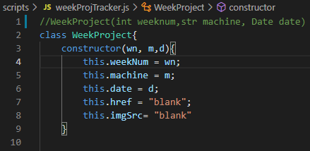
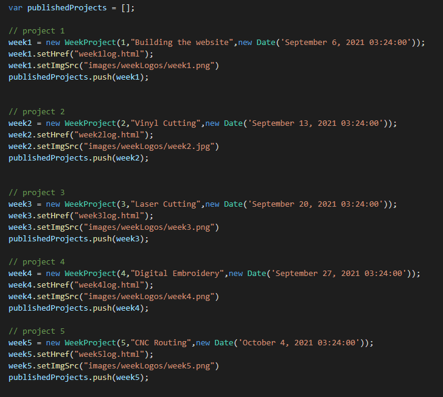
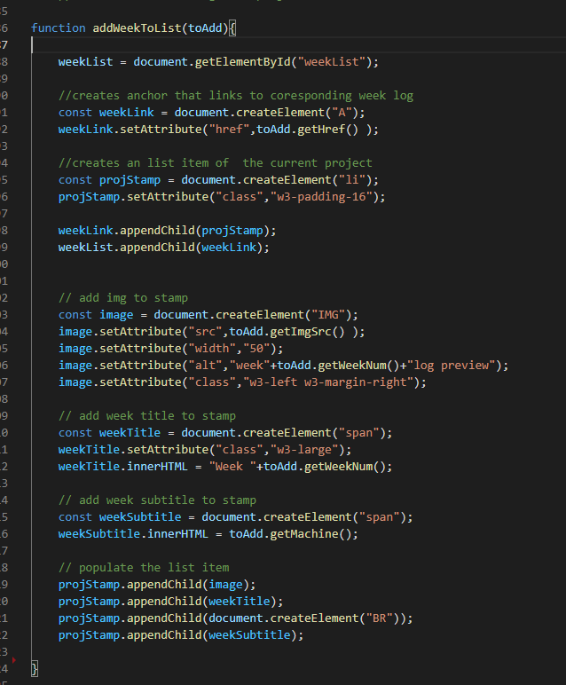
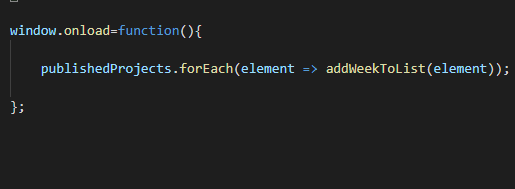
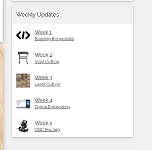

Week 1: Building the Website
Thanks Gousie
Building the website | |
Normally, building a website would problably be considered one of the harder projects to be assigned in a class like this because not many students taking this class are expected to have a backgroud in web design. However, I have actually taken multiple web desing classes in the past. One of which at high school and one being comp161 taught by professor Gousie. As a result, I am already proficient in HTML, CSS, and Javascript. very easily.
HTML, CSS, Javascript?
These are two of the main tools used in building websites, HyperText Markup Language, or HTML, is a language used to make the structure and content of websites. Cascading Style Sheets, or CSS, is used to style the html elements so the content looks appealing to the eye. Javascript is used to add extra functionality to the site using scripts.
What is Git?
Git is a tool used for managing projects with multiple files, often used by programmmers. A project is contained in something called a repository, to access that repository from your computer, you can clone it to make a copy of it where you need it. from then on, when there are changes made to the files in the repository, you can update those changes on your end as well by using pull, or if you have your own changes to make, you can send them using push.
Setting up github pages
I have used once for a project last year, but sucked at it, and that involved using the desktop app, not the terminal. When I saw the setup proceess for github pages, I was worried about the difficulty of it, but it suprisingly went by easily
I was able to set everything up initially using the terminal, but eventually, i realised that I could use the things i already learned from using the github desktop app for this project
Working with a template
For all of my past projects for building websites, everything had to be done entirely from scratch. This time, since I felt that wasn't a requirment and I wanted the site to have a nice feeling quickly, since there was more to this assingment than just the desing of the site, I decided to try out a template from w3schools. It was really helpful to have a strong image of what the site will end up looking like from the start. often, i would spend an unnescary amount of time thinkig about what the site should look like. A small drawback of using the template was that the code was not my own, so there were many different css classes I had no idea how to utilize and i might have ended up doing some things in less than optimal ways.
I was able to set everything up initially using the terminal, but eventually, i realised that I could use the things i already learned from using the github desktop app for this project
this template would serve as the structure for what is now this site
Adding a script
On every page of the site, there is a menu on the side with info on all of the weekly assignments on it. it would be really annoying to change the information every time I had to change on every page every time there is a new assignment, so I decided to make a script that is refrence on all pages that updates the list itself.
Week Project Class
Classes are a way to create a blueprint for your own special data type, with its own variables and functions, To start, I made a class for each of the weekly projects that stores the week number, machine used, date, url, and logo url.
Week Class Objects
Objects are implimentations of classes. if a class is the blueprint for a type of house, objects are the actual houses that blueprint are used to build, each made from the same blueprint, but with their own different aspects. Here, I made objects as variables to represent each of the weekly assignments I have done so far and add them all to one array(an array is basically a list of things). Any time a new assignment is complete, it will be put here.
Adding a project to the list
The way it works is that every page will have a ul with id "weekList". When this function is used on a WeekProject object, it will add a new item to the end of that list with the appropriate text, link, and image.
Making it run
the function to add the projects to the list was only me coding what sequece of events would happen if I called on it to, but there was nothing that told it when to execute, or to execute at all. The solution to this was pretty simple. Now, whenever the page has loaded, the script will add all of WeekProjects in the array to the weekList.
the HTML script tag
The way to tell an HTML page to run javascript code is through the script tag. although it is possible to put your code directly in the tag, This script is something we want to be able to control easily with One file. So instead of putting it in the tag, I let the tag refrence a file where the script is kept.
The end result
Well, I guess you already know what the end result is, since it is on pretty much every page of the sight, but I have a screenshot quota but I have to fulfill.